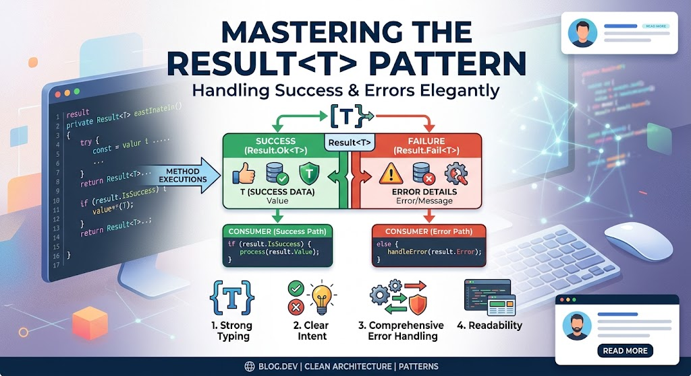

Mastering the Result Pattern in .NET: A modern Approach for a clean Error Handling

Error handling is one of the most critical aspects of building robust applications. In .NET, exceptions have long been the go‑to mechanism for signalling errors, but they are not always the best tool for every job. When exceptions are used for expected, recoverable failures (like validation errors or missing resources), they can obscure the happy path, make code harder to follow, and even hurt performance.
Enter the Result pattern: a simple, explicit way to represent the outcome of an operation, whether it succeeds or fails. By returning a Result object, you force the caller to acknowledge both outcomes, leading to cleaner, more predictable code.
In this post, we’ll explore a production ready implementation, with code examples directly from this modular monolith repository: modulith media platform template as part of the ongoing journey of documenting architectural and design decisions while building this project.
In this post, we’ll look at the Result pattern, including a rich Error type and seamless integration with ASP.NET Core. We’ll also look at extension methods that bridge the gap between your domain and HTTP responses, making API development faster and more robust.
What Is the Result Pattern?
At its core, the Result pattern replaces thrown exceptions with returned objects that clearly state:
- Whether the operation succeeded (
IsSuccess/IsFailure) - The value if successful (for
Result<TValue>) - One or more errors if it failed
This approach has several advantages:
- Explicit – the method signature tells you that errors are possible.
- Type‑safe – the compiler forces you to check the outcome before accessing the value.
- Composable – you can chain operations and handle errors in a uniform way.
- Performance – no expensive stack unwinding for expected failures.
The Result and Result<TValue> Classes
The foundation is a pair of classes that represent a successful or failed operation. Here’s the implementation: view code
namespace SharedKernal.Results
{
public class Result
{
protected Result(bool isSuccess, Error error)
{
if (isSuccess && error != Error.None)
throw new InvalidOperationException("A successful result cannot contain an error.");
if (!isSuccess && error == Error.None)
throw new InvalidOperationException("A failed result must contain an error.");
IsSuccess = isSuccess;
Error = error;
Errors = error == Error.None
? Array.Empty<Error>()
: new[] { error };
}
protected Result(bool isSuccess, IReadOnlyCollection<Error> errors)
{
if (isSuccess && errors.Count > 0)
throw new InvalidOperationException("A successful result cannot contain errors.");
if (!isSuccess && errors.Count == 0)
throw new InvalidOperationException("A failed result must contain at least one error.");
IsSuccess = isSuccess;
Errors = errors;
Error = errors.Count > 0 ? errors.First() : Error.None;
}
public bool IsSuccess { get; }
public bool IsFailure => !IsSuccess;
public Error Error { get; }
public IReadOnlyCollection<Error> Errors { get; }
public static Result Success() => new(true, Error.None);
public static Result Failure(Error error) => new(false, error);
public static Result Failure(IReadOnlyCollection<Error> errors) => new(false, errors);
public static Result<TValue> Success<TValue>(TValue value) => new(value, true, Error.None);
public static Result<TValue> Failure<TValue>(Error error) => new(default, false, error);
public static Result<TValue> Failure<TValue>(IReadOnlyCollection<Error> errors) => new(default, false, errors);
public static implicit operator Result(Error error) => Failure(error);
}
public class Result<TValue> : Result
{
private readonly TValue? _value;
protected internal Result(TValue? value, bool isSuccess, Error error)
: base(isSuccess, error)
{
_value = value;
}
protected internal Result(TValue? value, bool isSuccess, IReadOnlyCollection<Error> errors)
: base(isSuccess, errors)
{
_value = value;
}
public TValue Value => IsSuccess
? _value!
: throw new InvalidOperationException("The value of a failed result cannot be accessed.");
public static implicit operator Result<TValue>(TValue value) => Success(value);
public static implicit operator Result<TValue>(Error error) => Failure<TValue>(error);
}
}Key features:
- Factory methods –
SuccessandFailurecreate instances, making the outcome explicit. - Multiple errors – the
Resultcan hold a collection of errors, perfect for validation scenarios. - Guard clauses – constructors enforce consistency: a success cannot have errors, and a failure must have at least one.
- Implicit conversions – returning an
Errorfrom a method that returnsResultautomatically creates a failure result.
The Result<TValue> variant adds a Value property that can only be accessed when IsSuccess is true – otherwise it throws. This forces callers to check the outcome before using the value.
Defining Errors with the Error Record
To give errors structure and meaning, we use a record that encapsulates a code, a message, and a type. view code
namespace SharedKernal.Results
{
public sealed record Error(string Code, string Message, ErrorType Type = ErrorType.Failure)
{
public static readonly Error None = new(string.Empty, string.Empty, ErrorType.Failure);
public static Error Validation(string code, string message) => new(code, message, ErrorType.Validation);
public static Error NotFound(string code, string message) => new(code, message, ErrorType.NotFound);
public static Error Conflict(string code, string message) => new(code, message, ErrorType.Conflict);
public static Error Failure(string code, string message) => new(code, message, ErrorType.Failure);
}
public enum ErrorType
{
Failure = 0,
Validation = 1,
NotFound = 2,
Conflict = 3
}
public static class ErrorCodes
{
public const string NotFound = "NotFound";
public const string Validation = "Validation";
public const string Conflict = "Conflict";
public const string Failure = "Failure";
}
}Why a rich error type?
- Categorisation –
ErrorTypeallows different handling (e.g., 404 forNotFound, 400 forValidation). - Consistency – every error has a code and message, easy to log, display, or transform.
- Extensibility – you can add more error types as your application grows.
- Immutable – as a record, it’s thread‑safe and behaves like a value object.
Using the Result Pattern in Your Services
Here’s a typical service method that returns a Result<TValue>:
public Result<User> GetUserById(int id)
{
var user = _repository.Find(id);
if (user is null)
return Error.NotFound(ErrorCodes.NotFound, $"User with id {id} not found.");
return user;
}
Notice the implicit conversions: returning a User automatically wraps it in a Result<User>.Success, and returning an Error turns it into a failure. The caller must handle both possibilities:
var result = _userService.GetUserById(42);
if (result.IsSuccess)
{
Console.WriteLine($"User name: {result.Value.Name}");
}
else
{
Console.WriteLine($"Error: {result.Error.Message}");
}But we can do even better with the Match extension methods.
Bridging to HTTP with Extension Methods
In web applications, we often need to convert a Result into an HTTP response. Manually checking IsSuccess and returning the appropriate status code is repetitive and error‑prone. The following extensions solve that elegantly.
The Match Methods
using Microsoft.AspNetCore.Http;
using SharedKernal.Results;
using HttpResults = Microsoft.AspNetCore.Http.Results;
namespace SharedKernal.Extensions;
public static class ResultExtensions
{
public static IResult Match<TValue>(
this Result<TValue> result,
Func<TValue, IResult> onSuccess) =>
result.IsSuccess ? onSuccess(result.Value) : result.ToHttpResult();
public static IResult Match(
this Result result,
Func<IResult> onSuccess) =>
result.IsSuccess ? onSuccess() : result.ToHttpResult();
public static IResult Match(
this Result result,
IResult onSuccess) =>
result.IsSuccess ? onSuccess : result.ToHttpResult();
private static IResult ToHttpResult(this Result result)
{
var validationErrors = result.Errors
.Where(e => e.Type == ErrorType.Validation)
.ToList();
if (validationErrors.Count > 0)
{
var errors = validationErrors
.GroupBy(e => e.Code)
.ToDictionary(
g => g.Key,
g => g.Select(e => e.Message).ToArray());
return HttpResults.ValidationProblem(errors);
}
return result.Error.ToHttpResult();
}
private static IResult ToHttpResult(this Error error) =>
error.Type switch
{
ErrorType.Validation => HttpResults.BadRequest(new { error.Code, error.Message }),
ErrorType.NotFound => HttpResults.NotFound(new { error.Code, error.Message }),
ErrorType.Conflict => HttpResults.Conflict(new { error.Code, error.Message }),
_ => HttpResults.Problem(error.Message)
};
}
There are three overloads for Match:
- For
Result<TValue>– you provide a function that maps the successful value to anIResult. - For non‑generic
Result– you provide a function that returns anIResulton success. - For non‑generic
Result– you provide anIResultobject directly.
In all cases, if the result is a failure, it’s automatically converted to an appropriate HTTP error response via ToHttpResult.
The ToHttpResult method groups validation errors and returns a ValidationProblem (RFC 7807). Other error types are mapped to status codes: NotFound → 404, Conflict → 409, Failure → 500.
The Controller‑Friendly Version
For MVC controllers (which return IActionResult), we have similar extensions:
public static class ControllerResultExtensions
{
public static IActionResult Match<TValue>(
this Result<TValue> result,
Func<TValue, IActionResult> onSuccess) =>
result.IsSuccess ? onSuccess(result.Value) : result.ToActionResult();
public static IActionResult Match(
this Result result,
Func<IActionResult> onSuccess) =>
result.IsSuccess ? onSuccess() : result.ToActionResult();
public static IActionResult Match(
this Result result,
IActionResult onSuccess) =>
result.IsSuccess ? onSuccess : result.ToActionResult();
private static IActionResult ToActionResult(this Result result)
{
var validationErrors = result.Errors
.Where(e => e.Type == ErrorType.Validation)
.ToList();
if (validationErrors.Count > 0)
{
var errors = validationErrors
.GroupBy(e => e.Code)
.ToDictionary(
g => g.Key,
g => g.Select(e => e.Message).ToArray());
return new BadRequestObjectResult(new ValidationProblemDetails(errors));
}
return result.Error.ToActionResult();
}
private static IActionResult ToActionResult(this Error error) =>
error.Type switch
{
ErrorType.Validation => new BadRequestObjectResult(new { error.Code, error.Message }),
ErrorType.NotFound => new NotFoundObjectResult(new { error.Code, error.Message }),
ErrorType.Conflict => new ConflictObjectResult(new { error.Code, error.Message }),
_ => new ObjectResult(new { error.Code, error.Message }) { StatusCode = 500 }
};
}
The only difference is the use of BadRequestObjectResult, NotFoundObjectResult, etc., instead of the minimal API Results factory.
Putting It All Together: A Controller Example
Here’s a minimal API endpoint using the Match method:
app.MapGet("/users/{id}", (int id, IUserService service) =>
{
return service.GetUserById(id).Match(
user => Results.Ok(user)
);
});
If the user is found, Results.Ok(user) is returned. If not, the Match method automatically handles the failure and returns a 404 with the error details. No explicit if statements, no manual status codes – clean, declarative code.
For a controller action:
[HttpGet("{id}")]
public IActionResult GetUser(int id)
{
return _userService.GetUserById(id).Match(
user => Ok(user)
);
}The failure path is completely handled by the extension.
Why This Approach Shines
- Separation of concerns – business logic returns a
Result; infrastructure knows how to turn it into an HTTP response. - Consistent error formatting – all validation errors are returned as a
ValidationProblemwith property‑level details. - Type‑safe and self‑documenting – the
Matchmethod makes it obvious that the result could be a failure. - Testability – services can be unit‑tested without worrying about HTTP status codes.
- Flexibility – you can easily add more error types and corresponding HTTP mappings.
Conclusion
The Result pattern is a powerful ally in building maintainable, predictable applications. By making errors explicit and providing rich error types, you push error handling to the edges of your system – exactly where it belongs. The extension methods we’ve explored seamlessly integrate with ASP.NET Core, reducing boilerplate and ensuring consistent API responses.
If you’re tired of fighting with exceptions for control flow, give the Result pattern a try. Start with the implementation above, adapt it to your needs, and enjoy cleaner, more robust code.
Happy coding!